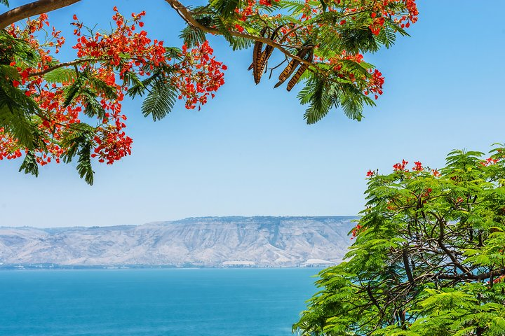
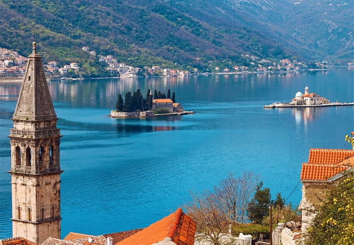
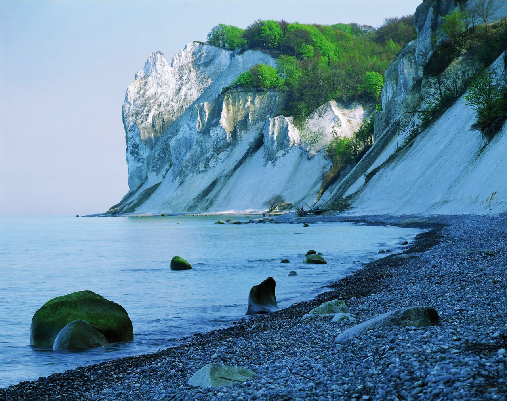

Wakacje nad morzem to idealny sposób na oderwanie się od codziennej rutyny. Wyobraź sobie szum fal, ciepły piasek pod stopami i słońce, które relaksuje każde napięcie. W naszej ofercie znajdziesz zarówno popularne kurorty tętniące życiem przez całą dobę, jak i zaciszne, ukryte zatoczki dla tych, którzy pragną prawdziwego odpoczynku od zgiełku. Morze to nie tylko plażowanie, to także sport, kultura nadmorskich miasteczek i niezapomniane kulinarne doznania.
Dzięki naszemu wieloletniemu doświadczeniu wybieramy dla Ciebie tylko najpiękniejsze wybrzeża. Dbamy o to, by hotele znajdowały się blisko plaży i oferowały wysoki standard. Niezależnie czy wolisz leniwe dni spędzane na leżaku z ulubioną książką, czy aktywny wypoczynek z rurką do snorkelingu w przejrzystej wodzie – znajdziemy dla Ciebie perfekcyjny cel podróży. Z nami Twoje wakacje nad wodą będą dokładnie takie, o jakich marzysz.

Jerozolima

Porto Montenegro

Dania